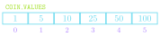
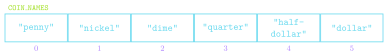

Jed Rembold
October 11, 2021
All the functions below would print out all valid two letter words from the English language at least once except for 1. Which does not?
def func_A():
for word in ENGLISH_WORDS:
if len(word) == 2:
print(word)alphabet = "abcdefghijklmnopqrstuvwxyz"
def func_C():
for x in range(len(alphabet))
for y in alphabet:
word = x + alphabet[y]
if is_english_word(word)
print(word)def func_B():
for word in ENGLISH_WORDS:
if is_english_word(word[:2]):
print(word[:2])alphabet = "abcdefghijklmnopqrstuvwxyz"
def func_D():
for l1 in alphabet:
for l2 in alphabet:
word = l1 + l2
if is_english_word(word)
print(word)type
precision
Grouping
width
sign
[fill]align
<, >, or ^ for left, right, or center justified| Code | Description |
|---|---|
b |
Inserts an integer using its binary representation |
d |
Inserts an integer using its decimal representation |
e or E |
Inserts a number using scientific notation |
f or F |
Inserts a number using a decimal point format |
g or G |
Choose e or f to get the best fit |
o |
Inserts an integer using its octal representation |
s |
Inserts a string value |
x or X |
Inserts an integer using its hexadecimal representation |
Which of the provided formatted string options below would evaluate to appear as:
101,234.98 & 4000
when printed?
"{:<12,f} & {:0>4d}".format(1.01234984e5, 320//8)"{>12,.2f} & {0>4d}".format(1.01234984e5, 32000//8)"{:<12,.2f} & {:<4d}".format(1.01234984e5, 3200//8)"{:<12,.2f} & {:0<4d}".format(1.01234984e5, 32//8).format() but with less syntaxf right before the string to let Python know it needs to do more with this particular stringA = 10
B = 15.123234
print(f"A is {A} and B is {B:0.2f}")COIN_VALUES = [1, 5, 10, 25, 50, 100]
COIN_NAMES = [
"penny",
"nickle",
"dime",
"quarter",
"half-dollar",
"dollar"
]
Can retrieve the value of any element by writing the index of that element in square brackets after the list name
COIN_VALUES[3] ⟶ 25COIN_NAMES[2] ⟶ "dime"Can loop through each of the list elements in turn
for elem in my_list:
# do stuffwhere elem is the name of the variable that will sequentially get assigned the value of every element in my_list
len function+ or +=*in operatorcool = ['blue', 'violet']
warm = ['red', 'orange']
colors = [cool, warm]
other_colors = [['blue', 'violet'],
['red', 'orange']]
print(colors == other_colors)
print(colors is other_colors)
cool[0] = 'indigo'
print(colors)
print(other_colors)
print(colors == other_colors)
print(colors is other_colors)| Method | Description |
|---|---|
list.copy() |
Returns a new list whose elements are the same as the original |
list.append(value) |
Adds value to the end of the list |
list.insert(idx, val) |
Inserts val before the specified idx |
list.remove(value) |
Removes the first instance of value from the list, or errors |
list.reverse() |
Reverses the order of the elements in the list |
list.sort() |
Sorts the elements of the list. Can take an optional argument key to specify how to sort |